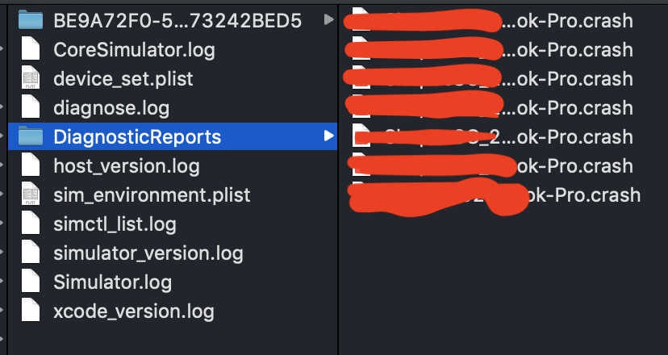
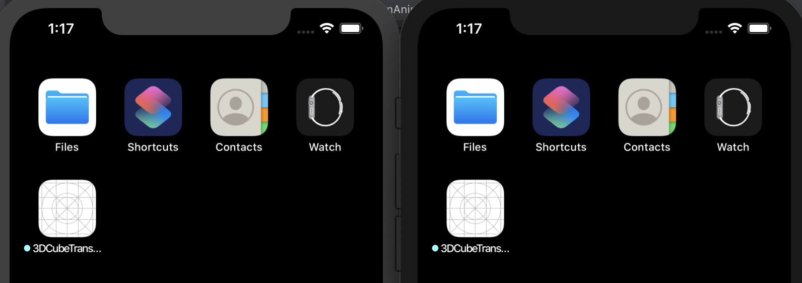

xcrun simctl is command utils to control iOS simulator, just like adb for Android. Sometimes, in CI server script, We need these simulator-integration command to interact with simulators and run test cases.
If we run xcrun simctl help, here are some subcommands. When successful, most of these commands exit with 0; when failed, most exit with a non-zero number.
Subcommands: create Create a new device. clone Clone an existing device. upgrade Upgrade a device to a newer runtime. delete Delete spcified devices, unavailable devices, or all devices. pair Create a new watch and phone pair. unpair Unpair a watch and phone pair. pair_activate Set a given pair as active. erase Erase a device's contents and settings. boot Boot a device. shutdown Shutdown a device. rename Rename a device. getenv Print an environment variable from a running device. openurl Open a URL in a device. addmedia Add photos, live photos, videos, or contacts to the library of a device. install Install an app on a device. uninstall Uninstall an app from a device. get_app_container Print the path of the installed app's container launch Launch an application by identifier on a device. terminate Terminate an application by identifier on a device. spawn Spawn a process by executing a given executable on a device. list List available devices, device types, runtimes, or device pairs. icloud_sync Trigger iCloud sync on a device. pbsync Sync the pasteboard content from one pasteboard to another. pbcopy Copy standard input onto the device pasteboard. pbpaste Print the contents of the device's pasteboard to standard output. help Prints the usage for a given subcommand. io Set up a device IO operation. diagnose Collect diagnostic information and logs. logverbose enable or disable verbose logging for a device status_bar Set or clear status bar overrides ui Get or Set UI options push Send a simulated push notification privacy Grant, revoke, or reset privacy and permissions keychain Manipulate a device's keychain
Just see I can do a lot of things with these command. If wanting to know more about a specific subcommand, we can use xcrun simctl help [subcommand] to seek help. Like, xcrun simctl help boot
Simulator info
use xcrun simctl list to see all the simulator information. We can get a list of device types, a list of info of runtime names, a list of device names.
1 2 3 4 5 6 7 8 9 10
== Device Types == iPhone 11 Pro (com.apple.CoreSimulator.SimDeviceType.iPhone-11-Pro) iPhone 11 Pro Max (com.apple.CoreSimulator.SimDeviceType.iP
== Devices == -- iOS 13.3 -- iPhone 11 Pro Max (34C9AC6A-577D-4CEF-8B10-20011DCFBA27) (Shutdown)
Use xcrun simctl list device to see the list of device info. Or use a device name to get paired devices’ info, like name, uuid, and status. For example,
1
xcrun simctl list devices "iPhone 11 Pro Max"
1 2 3 4 5 6 7 8 9 10 11 12
== Devices == -- iOS 12.4 -- -- iOS 13.3 -- iPhone 11 Pro Max (34C9AC6A-577D-4CEF-8B10-20011DCFBA27) (Shutdown) -- tvOS 13.3 -- -- watchOS 6.1 -- -- Unavailale: com.apple.CoreSimulator.SimRuntime.iOS-13-0 -- iPhone 11 Pro Max (893827B6-91E0-417C-A179-68343F695040) (Creating) (unavailable, runtime profile not found) -- Unavailable: com.apple.CoreSimulator.SimRuntime.iOS-13-1 -- iPhone 11 Pro Max (F4B573E0-4106-4FF2-ADA8-16DCC053026C) (Shutdown) (unavailable, runtime profile not found) -- Unavailable: com.apple.CoreSimulator.SimRuntime.iOS-13-2 -- iPhone 11 Pro Max (B63C96BD-1CE2-499B-8387-3B8AEBF50931) (Creating) (unavailable, runtime profile not found)
Get device environment variable
xcrun simctl getenv is for printing an environment variable from a running device.
1
Usage: simctl getenv <device> <variable name>
Take the follow command as an example, the SIMULATOR_UDID environment variable contains the UDID of the simulated device. But it doesn’t work for physical device.
xcrun simctl create <name> <device type> <runtime> For example, if I would like to create a iPhone 11 Pro Max with iOS 13.3, I can use the follow command.
1 2
xcrun simctl create "ry" "iPhone 11 Pro Max" iOS13.3 BE9A72F0-5793-447B-BEC4-63A73242BED5
The uuid of the new simulator is BE9A72F0-5793-447B-BEC4-63A73242BED5, which is output in standard out. And errors comes to standard error.
Tips: you should use available runtime, or you will get an error of invalid runtime: xxx.
If in shell scrip, we can capture the new device’s name using environment variable:
1 2 3
NEW_DEVICE=$(xcrun simctl create "Test Phone" "iPhone XR" iOS13.0) echo "🤖 Created ${NEW_DEVICE}" 🤖 Created BE9A72F0-5793-447B-BEC4-63A73242BED5
Another way to create a simulator using GUI is to go to Window -> Devices and Simulators
com.rong.lan.CubeTransitionAnimationDemo: 98045 2020-02-09 10:38:28.594 3DCubeTransitionAnimationDemo[98045:931065] gesture end translation x -281.000000; velocity-1056.111584 2020-02-09 10:38:28.594 3DCubeTransitionAnimationDemo[98045:931065] timer current tx -281.000332 2020-02-09 10:38:28.611 3DCubeTransitionAnimationDemo[98045:931065] timer current tx -285.030635 2020-02-09 10:38:28.627 3DCubeTransitionAnimationDemo[98045:931065] timer current tx -289.060938
Use xcrun simctl terminate <device> <bundle> to terminate an application by identifier on a device.
Container Path
xcrun simctl simctl get_app_container <device> <app bundle identifier> [<container>] command is used to get the path of the installed app’s container.
1 2 3 4 5
container Optionally specify the container. Defaults to app. app The .app bundle data The application's data container groups The App Group containers <group identifier> A specific App Group container
Here, we use defaults utils, because we already have a booted device BE9A72F0-5793-447B-BEC4-63A73242BED5, we don’t have to specify the device.
com.example.app is bundle id of my application. We reset ResetDatabase to YES. This is a handy way to change the user defaults for the application before its running.
Log Stream
spwan command would work with log stream utility. We can pass a predicate and filter the log output. Here the predicate is senderImagePath CONTAINS "nsurlsessiond". We can debug something wrong with URL session.
In a auto-test system, if having some kind of issue, by using this command, you can not only collect logs on disk but also capture ephemeral logging and dump system state.
1 2 3 4 5 6 7 8 9
➜ xcrun simctl diagnose -l Writing to /private/tmp/simctl_diagnose_2020_02_09.10-10-56+0800 Getting Simulator component versions... Collecting CoreSimulator logs... Collecting device information (this may take some time)... This operation will time-out after 300 seconds. Gathering 15 crash reports... Compressing Archive... Successfully wrote simctl diagnose archive to '/private/tmp/simctl_diagnose_2020_02_09.10-10-56+0800.tar.gz'

Clone
Clone is a very powerful command. See details in wwdc2019/418.
xcrun simctl clone <device> <clone name>. You can copy your custom device using this command.
1 2 3 4 5 6 7 8
// boot base simulator ry ➜ xcrun simctl boot ry ➜ xcrun simctl install ry ./demo.app // Must shutdown it before clone ➜ xcrun simctl shutdown all ➜ xcrun simctl clone ry ry-1 ➜ xcrun simctl clone ry ry-2 ➜ xcrun simctl boot ry-1 && xcrun simctl boot ry-2
Two new devices are created with the same contents.

Push Notification to simulator
Create a .apns file, ExamplePush.apns
1 2 3 4 5 6 7 8
{ "Simulator Target Bundle": "com.facebook.flipper", "aps": { "alert": "This is a simulated notification!", "badge": 3, "sound": "default" } }
Drag and drop an APNs file onto the target simulator.
The file must be a JSON file with a valid Apple Push Notification Service payload, including the “aps” key. It must also contain a top-level “Simulator Target Bundle” with a string value matching the target application‘s bundle identifier. – https://stackoverflow.com/a/60085404/4026902
bundle identifier The bundle identifier of the target application If the payload file contains a 'Simulator Target Bundle' top-level key this parameter may be omitted. If both are provided this argument will override the value from the payload. json file Path to a JSON payload or '-' to read from stdin. The payload must: - Contain an object at the top level. - Contain an 'aps' key with valid Apple Push Notification values. - Be 4096 bytes or less.
Only application remote push notifications are supported. VoIP, Complication, File Provider, and other types are not supported.
➜ ~ xcrun simctl privacy Grant, revoke, or reset privacy and permissions Usage: simctl privacy <device> <action> <service> [<bundle identifier>]
action The action to take: grant - Grant access without prompting. Requires bundle identifier. revoke - Revoke access, denying all use of the service. Requires bundle identifier. reset - Reset access, prompting on next use. Bundle identifier optional. Some permission changes will terminate the application if running. service The service: all - Apply the action to all services. calendar - Allow access to calendar. contacts-limited - Allow access to basic contact info. contacts - Allow access to full contact details. location - Allow access to location services when app is in use. location-always - Allow access to location services at all times. photos-add - Allow adding photos to the photo library. photos - Allow full access to the photo library. media-library - Allow access to the media library. microphone - Allow access to audio input. motion - Allow access to motion and fitness data. reminders - Allow access to reminders. siri - Allow use of the app with Siri. bundle identifier The bundle identifier of the target application.
Examples: reset all permissions: privacy <device> reset all grant test host photo permissions: privacy <device> grant photos com.example.app.test-host
For example,
1 2
➜ ~ xcrun simctl privacy booted grant location com.facebook.flipper ➜ ~ xcrun simctl privacy booted grant photos com.facebook.flipper
and use revoke to revoke the permissions.
Switch the appearance style in a device between light and dark.
➜ ~ xcrun simctl status_bar Set or clear status bar overrides Usage: simctl status_bar <device> [list | clear | override <override arguments>]
Supported Operations: list List existing overrides.
clear Clear all existing status bar overrides.
override <override arguments> Set status bar override values, according to these flags. You may specify any combination of these flags (at least one is required):
--time <string> Set the date or time to a fixed value. If the string is a valid ISO date string it will also set the date on relevant devices. --dataNetwork <dataNetworkType> If specified must be one of 'wifi', '3g', '4g', 'lte', 'lte-a', or 'lte+'. --wifiMode <mode> If specified must be one of 'searching', 'failed', or 'active'. --wifiBars <int> If specified must be 0-3. --cellularMode <mode> If specified must be one of 'notSupported', 'searching', 'failed', or 'active'. --cellularBars <int> If specified must be 0-4. --operatorName <string> Set the cellular operator/carrier name. Use '' for the empty string. --batteryState <state> If specified must be one of 'charging', 'charged', or 'discharging'. --batteryLevel <int> If specified must be 0-100.
1 2
// change the `dataNetwork` from `wifi` to `4g` ➜ ~ xcrun simctl status_bar booted override --dataNetwork '4g'
This command records the content of the screen of the current booted simulator, and save it to the video.mp4 file. To stop recording, we have to use ctl+c in the terminal.
1
xcrun simctl io booted recordVideo -f video.mp4
recordVideo cannot save recorded video output into a file that already exists unless we use -f flag to override the existing file.
// Open a URL in a device. simctl openurl <device> <URL> // add a photo or movie to the Photos library of the specified simulator xcrun simctl addmedia <device> <file1> <file2> // Set up a device IO operation. screenshot or recordVideo xcrun simctl io <device> screenshot <output.png>